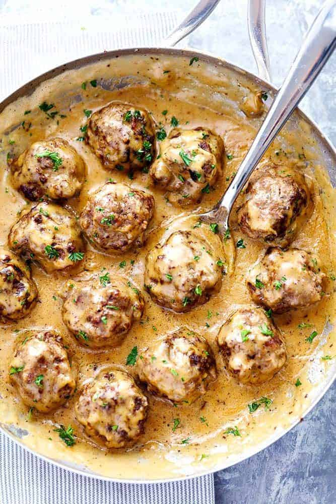

Swedish Meatballs

Description
The Best Swedish Meatballs are smothered in the most amazing rich and creamy gravy. The meatballs are packed with such delicious flavor. Savory, comforting and smothered with a sauce that melts in your mouth. You will quickly agree these are the BEST you have ever had!
Ingredients
- Ground Beef: Regular ground beef
- Bread Crumbs: I used Panko
- Parsley: Freshly chopped
- Allspice and Nutmeg: Trust me, these spices are what make it uniquely delicious.
- Onion: Finely chopped
- Garlic Powder: Gives flavor without the bulk.
- Salt and Pepper To taste.
- Egg: The binder for the meatballs
- Olive Oil: To brown the meatballs in.
- Butter: Creates the perfect flavor while helping the beef brown, you’ll add more for the sauce.
- Flour: The thickener.
- Beef Broth: Creates the base for the sauce
- Heavy Cream: This creates the creamy velvety sauce.
- Worcestershire Sauce: Secret ingredient that creates a rich flavor.
- Dijon Mustard: Spice
Steps
- Mix: In medium sized bowl combine ground beef, panko, parsley, all spicee, nutmeg, onion, garlic powder, salt and pepper and egg. Mix till combined.
- Roll: Roll into 12 large meatballs or 20 small meatballs. In a large skillet heat olive oil and 1 tablespoon butter.
- Brown: Add the meatballs and cook turning continuously until brown on each side and cooked through. Transfer to a plate and cover with foil.
- Sauce: In the same skillet add 4 Tablespoons butter and flour and whisk till it turns brown. Slowly stir in beef broth and heavy cream. Add the worcestershire sauce and mustard and bring to a simmer till it starts to thicken.
- Simmer: Add the meatballs back to the skillet and simmer for another 1-2 minutes. Add salt and pepper to taste.